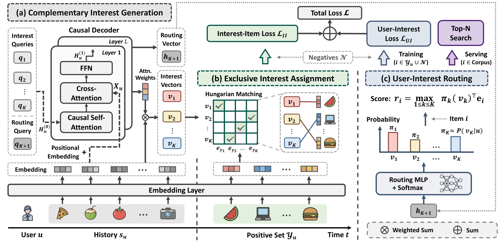
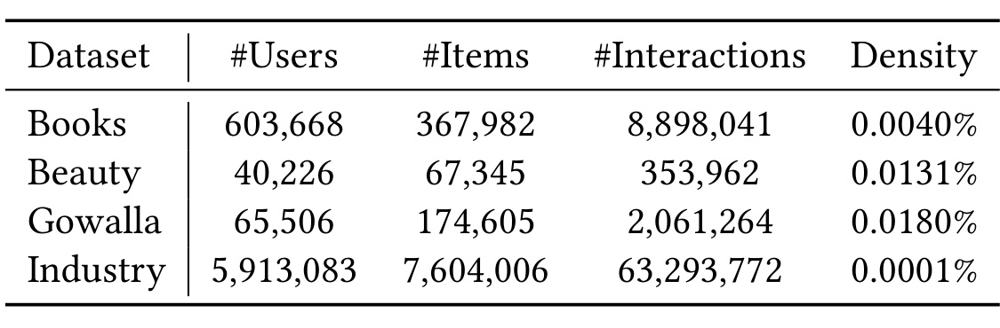
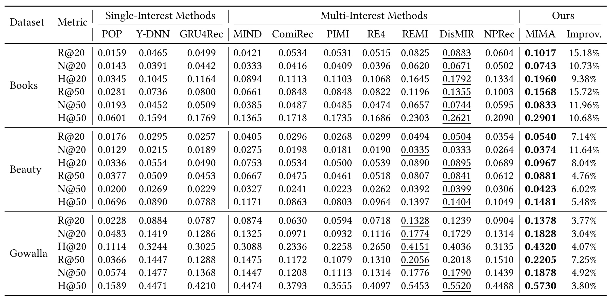
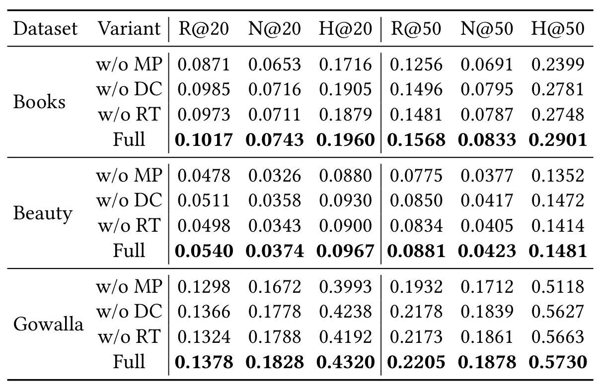
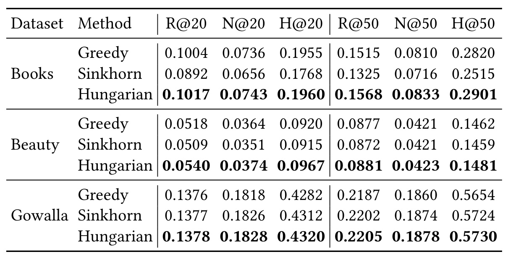
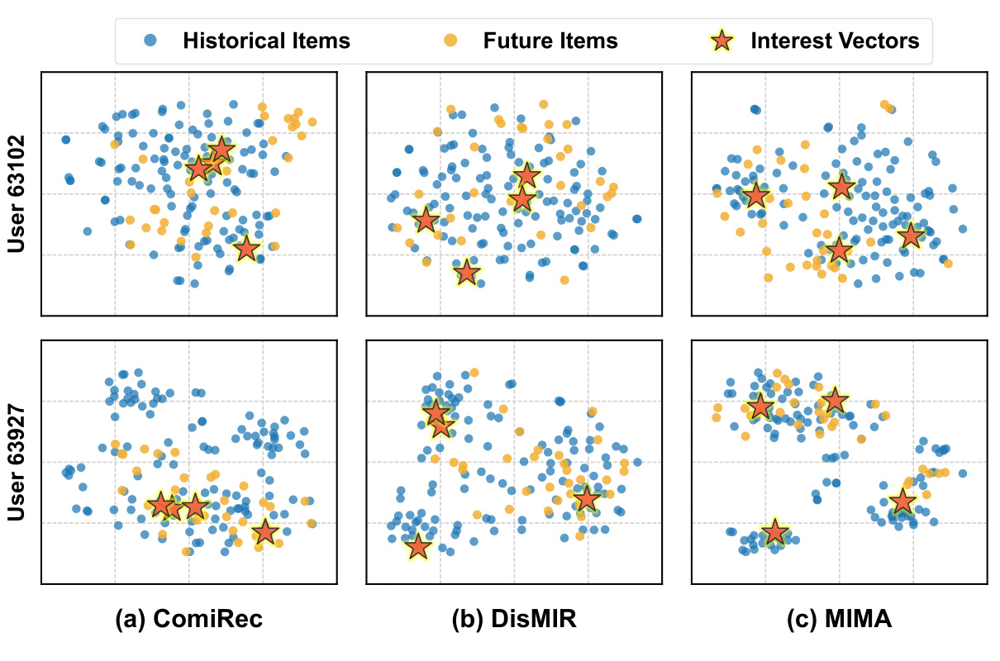
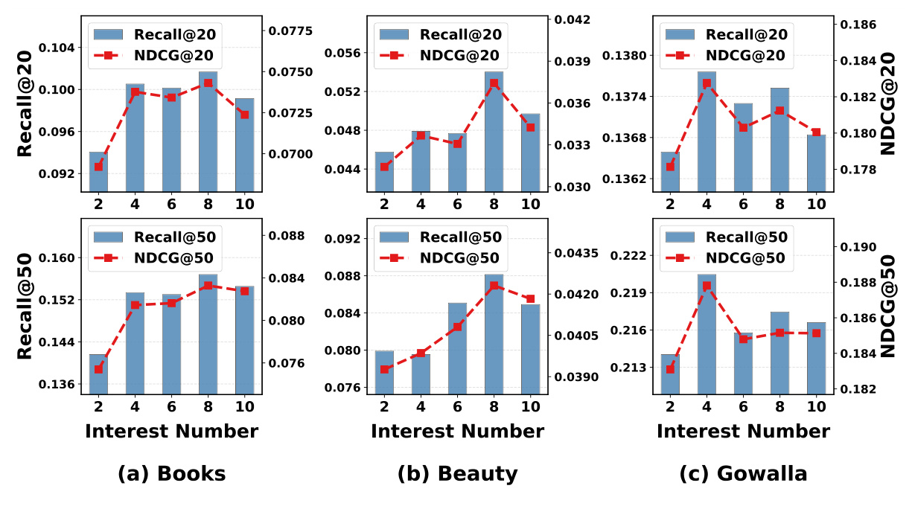
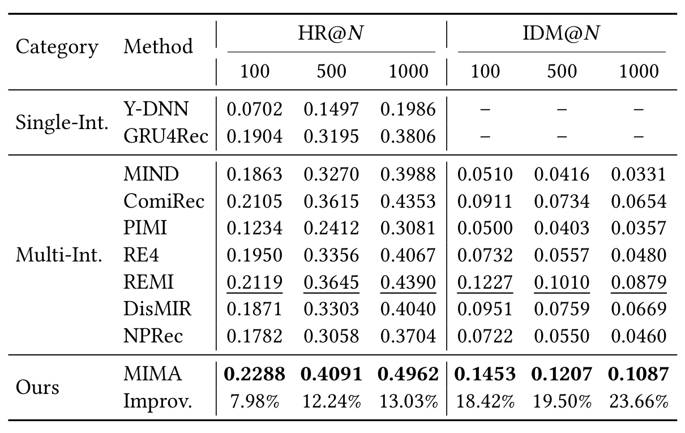
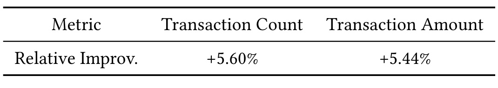
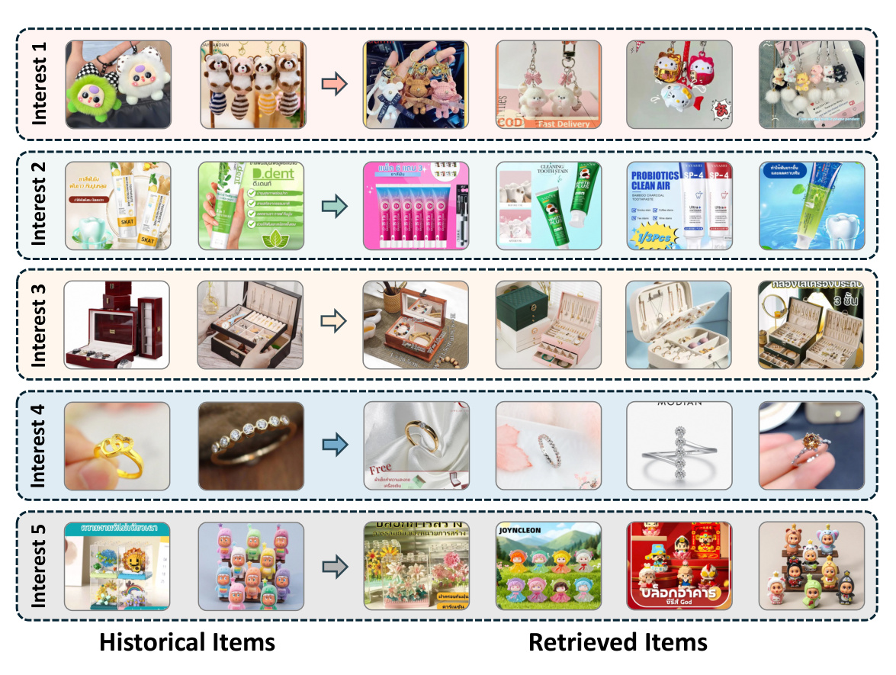

阿里-MIMA：让同一请求里的正反馈分别监督不同兴趣
论文：MIMA: Multi-Interest Recommendation via Multi-Positive Exclusive Assignment。作者 Xingyuan Mao、Alin Fan、Shichao Nie、Junfeng Zhang、Yan Xiao、Tao Luo、Xiaoyi Zeng，机构为阿里巴巴国际数字商业集团。论文于 2026 年 9 月 11 日提交 arXiv，9 月 14 日公告，本笔记日期为 2026 年 9 月 15 日。论文入口：arXiv:2609.12842。原文未发现独立代码入口；当前可核验状态为预印本，首页 ACM 2018 模板占位文字不代表正式发表会议。
MIMA 聚焦大规模召回中的兴趣坍缩：用户虽然拥有多个向量，训练却可能只反复强化其中一个。它把同一请求的多个正反馈联合送入训练，用互补兴趣生成、排他分配及兴趣激活路由连接监督与检索。值得精读的是，样本组织方式、梯度归属与服务打分在这里是一个整体设计。
每个训练样本只提供一个正反馈时，同一个最匹配兴趣可能反复吸收不同正样本的更新，其他兴趣却缺少监督；跨兴趣召回分数又未体现用户激活不同兴趣的强弱。
1. 背景和问题
1.1 多个兴趣向量为何仍然只能覆盖少数偏好
多兴趣召回试图解决单向量表达的容量限制。一个用户既可能购买数码产品，又可能浏览家居用品；如果只把全部历史压缩成一个向量，内积检索倾向于找一个平均方向，多种偏好的边缘区域容易被舍弃。多兴趣方法为同一用户输出若干向量，再分别在商品库中检索，最后合并候选。其收益来自不同向量能够覆盖不同偏好，而不是来自向量个数本身。如果多个向量都指向同一批热门商品，检索执行了多次，新增的有效候选却很少，系统承担了更多计算和去重成本，表达容量并没有兑现。
论文把这种现象称为兴趣坍缩，并回到训练实例的粒度寻找成因。常规单正样本训练对一段历史只给出一个目标商品，模型从多个兴趣中挑选与目标内积最大的一个，再利用这个兴趣计算推荐损失。这样做局部上很合理：最适合解释目标的向量得到梯度。但连续多个训练实例之间没有显式协商机制。一个初始化或早期学习占优的兴趣可以反复获胜，先拟合数码正反馈，再拟合家居正反馈，最后成为覆盖许多不相容信号的平均向量。未被选中的兴趣缺少直接正反馈，却可能通过共享编码器一起漂移，于是表面上不同的位置逐渐学习了相似表示。
这里的“冲突”并不意味着所有不同商品的梯度方向必然相反。作者指出的是，在单次前向与优化中，模型无法同时看到本来属于同一个用户上下文的多个目标，所以没有机会显式决定谁负责哪一个。即使全数据训练最终见过所有点击，分散到不同实例之后，也不等价于联合观察正样本集合。读者应把“单正样本是一个重要因素”保留为作者的因果假说和实验支持范围，不能扩展成兴趣坍缩的唯一成因。初始化、历史噪声、流行度、负样本分布和兴趣提取器的结构，也可能影响坍缩程度。
既有多兴趣工作主要从额外约束入手，例如鼓励向量分散、限制路由过度集中、通过物品共现图指导解耦。它们可以改善表示，但推荐目标本身仍可能不断把正反馈导向同一个赢家。MIMA 的切入点是改变主要监督单位，让多个目标在同一步里竞争兴趣资源。这个思路与多标签、下一篮子预测和多正样本对比学习有关，不过论文并非仅把损失中的一个正例换成多个正例；它还规定每个正例只能匹配一个兴趣，而一个兴趣最多承担一个正例。这样的分配结构才把“看到多个正例”转化成“收到不同监督”。
1.2 同一请求与一天窗口具有不同证据强度
工业推荐请求往往对应一页曝光商品，用户可能在这一次页面上下文里点击多个商品。这些点击共享请求发生时的用户侧特征，天然适合组成一个集合。训练输入只保留请求之前的历史，目标集合则包含本次请求的不同点击。该设计的价值不仅是减少重复编码，还在于它提供了一个明确的同期性定义：模型应该使用相同历史解释这些同时成立的目标，不能靠把后一个点击放进历史来预测前一个点击。
但是，公共数据不具备这种请求日志。Books 和 Beauty 只有按天的时间信息，Gowalla 也被作者统一按一天切窗；因此公共实验中的集合实际是一天内交互的近似集合。一天中可能发生多次访问、多个场景切换和兴趣演化，无法保证所有交互共享完全相同的请求上下文。作者公开披露了这个近似，阅读结果时也必须保留它。公共实验支持“按时间窗口构造联合监督可能有效”，工业数据则更接近“同一服务请求中的并发兴趣可以被显式分工”这一核心动机，两类结论不能完全互换。
此外，同一个请求里多个点击并不一定是多个不同意图。用户对相似牙膏或同款商品的连续比较，也会产生多个正反馈。排他匹配在这种情况下仍强制不同兴趣承担不同商品，可能把一个真实意图细分为多个方向。论文展示的最终结果说明这套归纳偏置在所测数据上有收益，却没有给出每组正例语义差异的直接标注，也没有证明请求内所有商品都应对应独立兴趣。因此更稳妥的理解是：它提供了一种训练分工约束，并通过召回结果验证效果，而不是直接恢复用户心理意图的确定性分解。
1.3 候选合并还需要知道兴趣有多活跃
即使训练出了区分明显的兴趣，合并候选时仍有另一个问题。内积分数回答的是“这个商品与某个兴趣有多接近”，但没有回答“这个兴趣对当前用户有多重要”。一个边缘兴趣下得到很高内积的商品，可能挤掉主导兴趣下内积略低的商品。作者将此称为跨兴趣分数不可比，并加入用户到兴趣的激活分布，使不同通道的分数受到各自权重调节。这不是在精排之后做多样性重排，而是在召回的通道合并阶段修改评分。
兴趣区分与兴趣激活是两个相互关联、却需要不同监督的目标。前者希望每个向量承担明确的目标；后者希望通道合并更符合用户整体偏好。如果路由损失直接改动兴趣和商品表示，它可能为了减少合并错误而再次把向量拉向相似区域。因此 MIMA 把路由输入及路由损失所用的相似度都停止梯度，保护排他监督形成的表示分工。后续方法部分可以据此理解三个层次：先组织同期目标，再让不同表示获得不同梯度，最后在不重塑表示的前提下学习兴趣权重。它们对应的失败模式不同，消融也应分别解释。
2. 方法
2.1 多正样本目标构造
设用户为 $u$，第 $m$ 个交互商品为 $i_m^u$，该交互所属请求为 $\rho_m^u$，兴趣个数为 $K$。原文式（4）先按请求聚合，再去重并截断：
$\operatorname{Unique}_K$ 保留最先出现的 $K$ 个不同商品，所以该操作不是对整个请求的无损集合编码。重复点击不额外占一个目标位置，超过容量的正例也不会进入这一个集合。有效目标少于 $K$ 时，作者补入嵌入恒为零的 dummy 商品，并用二值掩码 $m_{u,j}^{(b)}$ 区分真实目标与填充。这个掩码随后进入匹配约束及损失平均的分母；不能只在输入端把补位向量清零，却仍让补位参与训练。历史严格取 $\rho_m^u<b$ 的商品序列，避免把目标请求内部的反馈泄露给模型。
这一步的输入是有请求归属的交互日志，输出是历史、固定容量目标集合及掩码。它要求数据管道知道哪些点击共享一次请求，而不仅是逐行提供时间排序。对于少点击请求，真实正例数仍可能远小于兴趣数，未匹配兴趣无法从这一次目标获得直接监督；对于高点击请求，取最先出现的不同商品又可能偏向页面前部或较早点击。上述影响不意味着构造无效，但解释为何正例数量分布、截断率以及真实请求边界应被视为模型的一部分，不能藏进预处理细节。
2.2 因果解码器生成互补兴趣
MIMA 使用 $K+1$ 个可学习查询，其中前 $K$ 个用于兴趣生成，最后一个为路由查询。历史商品嵌入加位置嵌入得到 $X_u$；查询状态从 $H_u^{(0)}=Q$ 开始，在每层依次经过因果自注意力、对历史的交叉注意力和前馈网络。原文式（9）为：
其中 $A$ 是查询对历史位置的注意力矩阵。因果掩码让后面的查询能看到前面的兴趣状态，前面的查询不能看到后面的状态，从结构上鼓励后者考虑已经覆盖的行为。它是一种互补性偏置，并不等价于强制正交，也不是逐个生成商品的自回归推荐器。模型最终并不直接把查询隐状态当作兴趣向量，而是使用最后一层交叉注意力的前 $K$ 行重新聚合原商品嵌入，原文式（10）为：
符号解释：$e_{i_m^u}$ 是历史商品嵌入，$A_{k,m}^u$ 是第 $k$ 个查询对第 $m$ 个历史商品的权重，$n$ 为历史长度。这样得到的兴趣保留在商品嵌入所在空间，利于与候选商品进行内积比较。位置嵌入影响注意力计算，但最终聚合的是商品嵌入，不应误写为聚合包含位置信息的整个 $X_u$。

Figure 2 左侧给出查询如何读取历史，中央是兴趣与正样本的匹配，右侧是路由权重和服务分数。读图时要特别留意左侧的两种输出：注意力权重通过加权和生成兴趣向量，而第 $K+1$ 个隐状态单独成为路由向量。两者不是把同一输出换两个名字。因果位置安排使最后一个查询能汇总前面所有兴趣状态，它为路由网络提供全局摘要，同时避免重新为用户跑一套编码器。这种复用节约了表示计算，但路由网络和多兴趣检索本身依旧需要执行，不能据图宣称系统完全没有新增代价。
中央框中每列是一个目标，每行是一个兴趣，勾选关系体现排他约束，而非所有目标都选择自己最喜欢的同一个兴趣。图里正例位于时间线的目标侧，历史位于此前，强调了训练样本的切分。上方两个损失共同组成总损失，但它们不共同更新全部参数：兴趣商品损失塑造表示，路由损失只训练路由 MLP。因此框架图中的箭头应结合停止梯度公式理解，不能仅凭几条实线推断梯度流向。右侧服务分支用全部商品库做检索，训练分支则用正例集合与采样负例，两者的候选空间不同。该结构之所以适合召回，是因为每个路由标量可以乘进用户兴趣向量，从而继续使用内积索引，无需逐候选运行复杂网络；但图示没有提供延迟实测，接口兼容和线上成本达标仍是两件需要分别验证的事。从图的目标集合还可以看出，监督只在训练时存在；线上模型不会先知道未来点击再匹配兴趣。服务所需的是历史生成的兴趣和路由权重，这也是排他分配可以用于训练而不进入每次线上检索请求的原因。
2.3 排他兴趣分配
得到 $K$ 个兴趣后，模型构造相似度矩阵 $C_{k,j}^u=(v_k^u)^\top e_{y_j}$，表示第 $k$ 个兴趣对第 $j$ 个目标的内积。原文式（12）寻找二值分配矩阵：
符号解释：$Z$ 是匹配矩阵，$C$ 是兴趣与目标的相似度，$m$ 为有效目标掩码。第一项约束规定真实正例恰好分配给一个兴趣，填充列不分配；第二项约束规定每个兴趣最多负责一个目标。模型以负相似度为成本运行 Hungarian 算法，得到当前矩阵下的全局最优匹配。随后用 $\bar v_j^u=\sum_k Z^*_{k,j}v_k^u$ 取出目标对应的兴趣，再计算推荐损失。匹配本身在 stop-gradient 下执行，离散最优解只决定哪些表示参与损失，梯度通过选中的表示回到编码器。 因此这不是可微最优传输，也不需要对 Hungarian 的搜索过程反向传播。
全局最优仅指当前兴趣与目标相似度总和的最优分配，不意味着整个非凸推荐训练全局最优。排他约束防止同一实例中的主导兴趣吸收多个正例，却不保证不同实例之间兴趣编号具有固定语义。贪心匹配也能保证一对一，但前面选错会限制后面的目标；Sinkhorn 软分配则把一个目标的监督分散给多个兴趣。在作者的解释里，保持梯度集中和避免局部匹配决策共同促成更好的专业化。有效正例不足 $K$ 时，未匹配兴趣没有直接的兴趣商品损失梯度，但共享参数的更新仍可能间接改变它的输出。
2.4 用户兴趣路由
作者用潜在兴趣解释用户偏好：同一商品可能由不同兴趣解释，而某个兴趣是否活跃又依赖用户。把兴趣视为隐藏变量时，完整偏好应对所有可能兴趣的贡献进行边缘化，而不仅是找到内积最大的向量。这个概率视角先说明为何需要通道权重，实际检索时采用的近似评分将在后面单独给出。原文式（14）提供概率混合的动机：
符号解释：前一项描述兴趣与商品相关性，后一项是用户激活兴趣的强度，求和范围覆盖全部兴趣通道。用户侧条件相同并不意味着各通道的激活强度相同，因此需要一个面向用户的分布而非为全部用户固定相同权重。最后一个查询已经读取其他兴趣的状态，可作为估计这个分布的输入；它经过两层 MLP 与 softmax 得到路由权重，原文式（15）为：
符号解释：$W_1,W_2$ 为路由参数，$\sigma$ 为 LeakyReLU，$\operatorname{sg}$ 表示停止梯度，$\pi_{u,k}$ 是归一化通道权重。这是一种对兴趣强弱的参数化估计，而非经过校准检验的真实行为概率。 服务阶段并不直接计算前面的概率求和，而使用式（16）的最大加权内积分数：
必须区分式（14）的 sum 概率分解和式（16）的 max 检索函数。原始内积可为负，也不归一化，乘一个 softmax 权重不会自动把它变为概率；因此不能把两式写成严格等价推导。工程上，对每个兴趣用 $\pi_{u,k}v_k^u$ 检索，再根据分数合并即可。正的标量缩放在精确内积条件下不会改变同一通道内部的排序，作用主要体现在跨通道比较，这也解释了为什么路由模块改善的是合并，而不是为每个通道重新定义所有商品的局部顺序。
2.5 两个目标与梯度隔离
总损失为 $\mathcal L=\mathcal L_{II}+\mathcal L_{UI}$。对于有效目标下标集合 $\mathcal P_u$ 与采样负例池 $\mathcal N$，式（18）仅使用经过匹配选出的兴趣：
该式把每个真实正例与负例进行 sampled softmax 比较，分母不应误写为整个商品库，也不把所有其他正例当作负例。$\bar v_j^u$ 体现了分配结果，因此多正例学习不会退化为给同一个兴趣反复累加多份梯度。路由目标则比较正例最高通道得分与负池最难得分，原文式（19）为：
符号解释：帽号表示 L2 归一化，$\gamma$ 是间隔，实验设为 0.02。这里归一化是为了避免无界原始点积使固定间隔受尺度影响。与此同时，相似度也停止梯度，配合路由输入的停止梯度封闭所有返回表示的路径，使 $\mathcal L_{UI}$ 只更新 MLP。训练路由使用归一化相似度，服务式（16）却使用原始内积，二者只有 max 结构一致，数值尺度并非完全一致。复现时需要按原文实现这种区别，并监控向量范数是否导致训练所得通道权重在服务时发生预期外的影响。路由目标还通过最难负例学习全局排序间隔，其行为受负池构造影响；不应仅凭损失名称把它视为对用户兴趣概率的交叉熵估计。
3. 实验结果
3.1 数据及评测协议

Table 1 显示公共与工业数据规模有明显差异。Books 有 603,668 位用户、367,982 个商品和 8,898,041 次交互；Beauty 有 40,226 位用户、67,345 个商品和 353,962 次交互；Gowalla 有 65,506 位用户、174,605 个地点和 2,061,264 次交互。工业数据来自 Lazada 泰国站，用户数为 5,913,083，商品数为 7,604,006，交互为 63,293,772 次，表中密度仅 0.0001%。密度是整个用户商品矩阵的观察比例，不能直接代替每个请求包含几个正例，也不能由它推断每个用户的兴趣数量。作者在稀疏数据上观察到较大增益，但这四个数据集在领域、序列长度、用户划分和目标构造上均不同，密度与效果的关系主要是经验现象，尚未通过控制变量实验单独识别。
公共数据过滤少于五次交互的用户和商品，按用户以 8:1:1 划分训练、验证、测试。评测时取用户时间序列前 80% 生成表示，用剩余 20% 作为未来目标，报告截断位置为 20 和 50 的 Recall、NDCG 与 HR。Books 和 Beauty 历史最长为 20，Gowalla 为 40。工业数据覆盖十一天，前十天训练、最后一天测试，历史最长为 1024，报告 HR@100、HR@500 和 HR@1000。因此公共结果与工业结果不仅数据来源不同，检索候选规模和截断位置也不同，数值不能横向直接比较。
所有方法嵌入维度为 64，batch size 为 128，负池大小为 1280。MIMA 使用两层解码器，Books 和 Gowalla 为两个注意力头，Beauty 为八个头；兴趣数分别为 Books/Beauty 的八个与 Gowalla 的四个。学习率在 Books 为千分之一，在另外两个公共数据集为万分之五。工业多兴趣方法统一使用五个兴趣。读者应注意，公共实验不是把所有用户都按同样的兴趣容量处理，也不是比较无限上下文能力，而是在明确较短序列和给定负采样下检验候选匹配；工业长历史扩展虽然更接近线上，却没有对应详细的训练耗时和显存表。
3.2 公共数据主结果

Table 2 一共覆盖三个数据集、两个截断位置和三个指标，MIMA 在展示的十八项指标上均为最好。Books 的 Recall@20 从最强基线 DisMIR 的 0.0883 提升到 0.1017，绝对差为 0.0134，相对提升约 15.18%；Recall@50 从 0.1355 升至 0.1568，对应约 15.72% 相对提升。NDCG@20 为 0.0743，对比 0.0671 相对提升约 10.73%，说明效果不只体现在覆盖更多未来物品，也体现在较靠前的位置。HR@20 则从 0.1792 到 0.1960。不同指标衡量的内容不同，不能把召回率提升等同为用户交易率提升。
Beauty 上的增益更温和，Recall@20 为 0.0540，对比 0.0504，相对提升 7.14%；NDCG@20 的最强基线是 REMI 的 0.0335，而不是同表中多项获胜的 DisMIR。MIMA 达到 0.0374，对应 11.64%。因此“对最强基线提升”是逐单元格选择参照，不应把所有提升都写为战胜同一种模型。Gowalla 的 Recall@20 为 0.1378，对比 REMI 的 0.1328，约提升 3.77%；NDCG@20 从 0.1774 到 0.1828，约提升 3.04%。这种从 Books 到 Gowalla 缩小的幅度支持作者关于稀疏场景更受益的讨论，但不足以证明密度单独决定收益。
作者报告相对最强基线的改进经配对 t 检验达到 $p<0.01$。这增强了表内差异的可信度，不过表中没有完整展示置信区间、逐随机种子波动和用户分组，所以不能据此推断任意业务分层都稳定受益。另一个值得关注的事实是，MIND、ComiRec 等早期多兴趣方法并非总能超过单兴趣 GRU4Rec，多一个向量维度并不会自动带来收益。这与论文提出的监督分工问题一致，但也可能受到不同方法调参及负例适配的影响。主表证明完整方案有效，具体是哪一部分产生收益还需要结合后续消融，而不能直接从主表确认兴趣坍缩机制的全部因果链。
表内的最佳标记是在给定数据划分、历史长度和检索截断下比较所得；换成逐次下一商品预测或不同负池之后，指标意义和难度都会变化。因此移植主表结论时，应首先复现评测协议而不是直接对齐某个小数值。
3.3 模块与匹配消融

Table 3 的 w/o MP 同时移除多正样本监督及对应的排他分配，回到传统单正样本范式；w/o DC 用 ComiRec 风格的注意力提取器替换因果解码器；w/o RT 移除用户兴趣路由，让通道等权合并。Books 的 Recall@50 从完整模型的 0.1568 分别降到 0.1256、0.1496 和 0.1481。最大下降来自 w/o MP，说明联合正例与排他监督组成的整体最重要；但这个实验不能把两者的独立贡献拆开，更不能声称单独的 Hungarian 贡献了全部差距。三个变化还会影响梯度路径、目标密度及兴趣表示，不能视为完全可加的三个独立改进量。
Beauty 的 Recall@20 由 0.0540 降为 w/o MP 的 0.0478、w/o DC 的 0.0511、w/o RT 的 0.0498。路由移除造成的下降在这个指标上大于替换解码器，提示通道合并权重确实影响最终召回，而非只是一个解释性附件。Gowalla 的 Recall@50 由 0.2205 降为 0.1932、0.2178 和 0.2173，同样由监督范式变化带来最大差距。完整模型在所列消融上最好是扎实的结果，但表中没有逐消融显著性和置信区间，因此较接近的两项差异不宜过度排序。
这张表也限定了“互补生成”可以怎样表述。替换成独立注意力之后，模型仍保留其他机制并保持相当强的结果，说明因果解码器有额外贡献，但不是没有它就完全无法分化。反过来，移除多正例仍保留其他结构，却明显下降，提示只增加解码器并不能替代监督改造。对于复现，最有区分力的下一组对照应保留相同数量正例，分别使用不排他硬路由、贪心排他和全局排他；同时保持优化步数和已消费正例量相等。这是从现有设计缺口提出的实验，而非作者已完成的结果。
还应保留一个训练预算问题：由集合退回单目标可能改变一次更新消费的有效反馈数。如果只固定迭代步数而未报告等量反馈或等量时间的对照，观察到的差距会同时包含信息密度优势与分工机制优势，当前表格未单独分解这两部分。

Table 4 更直接比较分配算子。Books 上 Hungarian 的 Recall@20 为 0.1017，贪心为 0.1004，Sinkhorn 为 0.0892；Recall@50 分别为 0.1568、0.1515 和 0.1325。这里贪心与全局最优的差距明显小于软分配与全局最优的差距，支持作者关于排他硬分配保持梯度集中的解释。Hungarian 让当前所有配对相似度之和最大，贪心则可能过早占用一个对其他目标更必要的兴趣。即使每个目标都找到了局部最合适的剩余兴趣，整体仍可能不如全局匹配。
Beauty 的 Recall@50 三者非常接近：Hungarian 0.0881、贪心 0.0877、Sinkhorn 0.0872；Gowalla 的 Recall@20 只有 0.1378、0.1376、0.1377 的差异。故“总体最好”不能写成“所有数据集都大幅领先”。尤其在大规模训练系统中，如果精确匹配需要额外 CPU/GPU 同步，而贪心接近同等质量，质量成本权衡仍有研究空间。论文没有给出三种匹配的端到端耗时对照，因此尚不能判断 Hungarian 在所有部署预算上都最划算。
软匹配结果较差也需要结合实现解释。该实验说明文中所采用的 Sinkhorn 配置未达到硬分配效果，不代表所有可微分配、温度退火或最后再硬化的方案都必然失败。负例和优化超参若为原方法适配，软分配可能还需要不同的训练温度和正则化。更稳健的结论是：在作者统一实验设置中，精确且排他的匹配表现最佳，贪心是相当强的竞争者；监督是否集中到单个兴趣，比单纯强调分配过程是否可微更值得优先检验。
此外，匹配的“顺序无关”针对集合目标的优化结果而言；若相似度相同存在多组最优解，具体实现仍可能选择不同的同值匹配。训练后兴趣编号也不天然固定为某个商品类目，评估时应关注召回集合及总分配质量，避免把编号变化错误地判作语义不稳定。
3.4 兴趣表示与容量敏感性

Figure 3 将两位用户的历史物品、未来物品以及四个兴趣投影到二维空间。蓝点表示历史，黄点表示未来，星形表示兴趣；三列分别为 ComiRec、DisMIR 和 MIMA。左列多个星形聚集在相邻区域，意味着多个通道可能覆盖类似候选；中列已有一定分离，但仍有部分兴趣接近，或对未来物品所在区域覆盖不足；右列的星形更分散，并更贴近不同的历史及未来物品簇。这个可视化与主结果及消融方向一致，能够直观展示作者期待的兴趣分工是什么样子。
但是它只选了两位交互数为 150 的用户，并不是全体用户分布。t-SNE 会改变高维距离的几何解释，图中星形更远不能单独证明高维候选去重率或业务覆盖更好；也不能由一组投影断言每个兴趣都有稳定类别。图中“未来物品”用于展示覆盖，模型输入仍应限制在评测历史，不应因为可视化把两者放在一起就认为未来行为参与了编码。定性图最合适的作用是说明机制和检查明显失败现象，定量判断仍应回到召回指标和工业 IDM，而不是用视觉分散替代实际收益。

Figure 4 的横轴是兴趣数，从 2 到 10；柱表示 Recall，折线表示 NDCG，上排截断为 20，下排为 50。Books 和 Beauty 最优点大体在八个兴趣，Gowalla 则在四个兴趣，继续增大并没有持续增长。这说明资源存在合适范围：兴趣太少难以覆盖偏好，过多可能引入冗余或过度切分。不同数据集上的最优点不同，也提醒读者不要把“固定八兴趣”当作一般结论。图使用左右两套纵轴，柱高和折线位置不是同一个量纲，只能分别比较各自趋势。
该实验改变 $K$ 时也改变了目标集合容量，因此混合了表示容量和多正样本监督量两种因素。 增大兴趣数可能让更多原本被截断的点击进入训练，也可能改变补位比例；性能提升不能全部归因于新增兴趣向量。原文关于冗余兴趣带来噪声的解释合理，但仅靠这条曲线无法单独识别。若要进一步判断真正需要多少兴趣，应固定每次消费的有效正例分布，只改变兴趣数，或者反过来固定兴趣数改变正例上限。论文另有层数与注意力头敏感性分析，结论是两层通常足够，Beauty 对八个头更有利，Books 的两个或四个头已能达到较好结果；它支持浅解码器选择，但没有替代独立的延迟和吞吐测试。
3.5 工业离线与线上收益

Table 5 在五兴趣设置下展示工业 HR 和 IDM。MIMA 的 HR@100、HR@500、HR@1000 分别为 0.2288、0.4091、0.4962，最强对照 REMI 为 0.2119、0.3645、0.4390，对应相对提升 7.98%、12.24%、13.03%。候选预算从一百增加到一千时，完整模型的优势没有消失，说明收益不仅来自最前面少数商品。公共数据上的强基线 DisMIR 在工业数据不再最强，作者推测大规模稀疏共现图削弱了谱聚类质量；这是解释性推测，表格本身没有直接测量图噪声、聚类稳定性或分解耗时。
IDM 衡量每个兴趣召回的商品，对本兴趣的归一化相似度比最强竞争兴趣高多少，再对用户、兴趣与召回商品平均。它为兴趣分工提供比两用户投影更广泛的量化观察。MIMA 的 IDM@100、IDM@500、IDM@1000 为 0.1453、0.1207、0.1087，对比 REMI 的 0.1227、0.1010、0.0879，相对提高 18.42%、19.50%、23.66%。两组指标同时提高说明，更清晰的表示边界与更好的召回在本实验中共存；如果只有 IDM 升高而 HR 下降，可能只是人为把向量推开而损伤匹配，这里没有出现那种表面多样性收益。
不过 IDM 不直接测量召回集合交并比，也不是对用户满意度或跨类目多样性的度量。它依赖当前学习出的嵌入空间及归一化方式，而且每个兴趣取相同数量商品进行统计，因此不能替代真实流量权重下的候选贡献。作者把它作为兴趣坍缩的诊断指标是有价值的，但独占召回比例、长尾覆盖、商品质量、不同活跃度用户的命中率仍应单独观察。工业结果还受私有数据可得性限制，公开材料不足以复现完整日志及线上样本，离线表只能视为作者报告的已发表实验，而非本笔记独立重跑验证。
更严谨的工业评估还应把新老用户和历史长短拆开，因为短历史用户可能没有足够行为支撑五路清晰分工；当前聚合表不能证明每个分组都享有同等收益。

Table 6 来自大规模电商首页召回的七天 A/B 测试，MIMA 替换现有类似 ComiRec 的匹配模型，交易笔数相对提升 5.60%，交易金额相对提升 5.44%。这两个数是相对变化，不能写成百分点；交易金额也不能进一步替换为利润或收入。正文另报独占曝光占比提高 5.12 个百分点，即曝光商品只由该通道召回的比例增加。这个指标说明新通道可能为多路召回提供额外候选，而不只是与既有通道重复命中，但它与交易指标的统计口径完全不同。
线上结果把离线机制与业务价值联系起来，是论文的重要证据。仍需保留的缺口是：正文没有披露流量比例、总用户规模、交易绝对基数、逐日置信区间或实验分层，也没有说明七天是否覆盖长期行为变化。交易笔数和金额同时增长支持当前实验环境下的收益，却不足以预测另一国家站点、另一排序系统或更长实验周期的同等提升。独占曝光增长与交易提升同时发生，也不能单凭这三项汇总就建立“新增独占候选导致全部交易增益”的严格因果分解。这里可以确认的是替换整个召回方案后的线上效果，而非每个模块的单独线上增量。
3.6 用户案例

Figure 6 每行左侧展示关联的历史商品，右侧展示对应兴趣召回的商品。图中可见挂件、口腔护理、首饰收纳、戒指和装饰摆件等不同主题：第一行由小挂件历史延伸到相似饰品，第二行由牙膏等用品延伸到牙刷与口腔护理商品，第三行保持首饰盒和收纳用品的联系，第四行围绕戒指，第五行则呈现摆件。这些观察来自图中商品外观，而非额外类目标注。五行各自与历史相关，说明分工并不是随机把候选散开，而是至少在该用户上保留了可解释的偏好对应关系。
案例特别适合展示“互补但仍相关”的目标：如果只追求不同，模型也可能召回与历史无关的五类商品；这里可以同时看到行内连贯与行间差异。但它仍然是作者选取的单个用户，没有统计抽样规模，不能据此声称所有用户五个兴趣都完全不重叠。历史商品如何归属各兴趣、展示商品是否按固定排名选择，以及失败案例比例都未完整披露。因此该图补充了机制的可读性，不替代 Table 5 的总体结果。对未来复现，更有说服力的是随机抽样展示成功与失败两组用户，并附上兴趣间候选重叠率，从而判断这种分工现象到底有多普遍。
4. 总结
MIMA 最值得保留的认识是：多兴趣表达是否有效，取决于同一训练步骤中是否存在足够明确的责任分配。多个查询只能提供表示容量，多个正例只能增加监督；把两者通过排他匹配连接，才让不同目标的梯度流向不同兴趣。因果解码器为这种分工提供互补的结构偏置，路由网络则学习通道强弱，解决召回合并阶段的另一个问题。三者在公共数据、工业离线和七天线上实验中共同形成了积极证据，特别是主表十八项指标全面领先，以及工业 HR 与兴趣区分间隔同步提高。
复现时最应避免的误读有四类。第一，把公共数据的一天窗口等同于严格同期请求，会高估实验对原始动机的直接验证程度。第二，把式（14）的概率求和和式（16）的最大加权内积写成同一个概率模型，会掩盖真正执行的服务函数。第三，遗漏路由输入或归一化相似度上的停止梯度，会让路由损失重新塑造兴趣表示，偏离作者的参数隔离设计。第四，只截取目标集合而不正确处理 dummy 和掩码，会把补位变成错误监督，并破坏排他约束。这些都不是写法上的细微差别，而会改变训练对象和最终检索行为。
证据边界也需要继续保留。请求内的多个点击未必代表互异的语义兴趣，一对一分配可能对同类比较行为过度拆分；固定兴趣数又不一定适合不同活跃度用户。容量实验中正例上限和兴趣数同步变化，不能分离监督量与容量贡献。路由训练使用归一化相似度，服务使用原始内积，尚缺少专门检验范数变化与概率校准的实验。作者提供了工业线上结果，但没有完整披露流量规模、长期跟踪和系统时延，因此不能仅凭“接口不变”推断部署代价为零。代码入口未公开，私有工业数据不可独立获得，使精确复现实验仍存在现实障碍。
后续研究可以围绕三条可检验的问题展开。首先，在固定有效正例数与训练预算的条件下，独立改变兴趣数，并对单点击、少点击、多点击请求分组，检验排他机制到底在哪些监督密度下最有价值。其次，固定其余模块，比较全局匹配、贪心、非排他硬路由及可退火软分配，同时测量训练吞吐、设备同步和最终去重后的召回贡献，明确质量提升是否值得额外成本。最后，把通道路由的服务 raw score 与训练 cosine score 分开对照，报告向量范数、权重分布、候选合并结果及真实交易变化，判断校准究竟改善了哪个环节。
从工程采用角度看，最先应该确认的是日志能否可靠恢复请求边界、目标截断比例是否可控，以及未来行为是否被严格排除；之后才是把兴趣提取器改成解码器。只复制模型层而沿用原有逐点击训练样本，会遗漏论文最关键的联合监督设计。反过来，即使暂不完全迁移路由网络，也可以通过严格控制的离线对照研究联合目标与排他分工是否降低兴趣重叠。这里提出的是研究顺序和验证条件，不是承诺复现同等增益；MIMA 已提供一条值得检验的路径，而收益大小仍取决于数据组织、目标分布和整条召回链路。